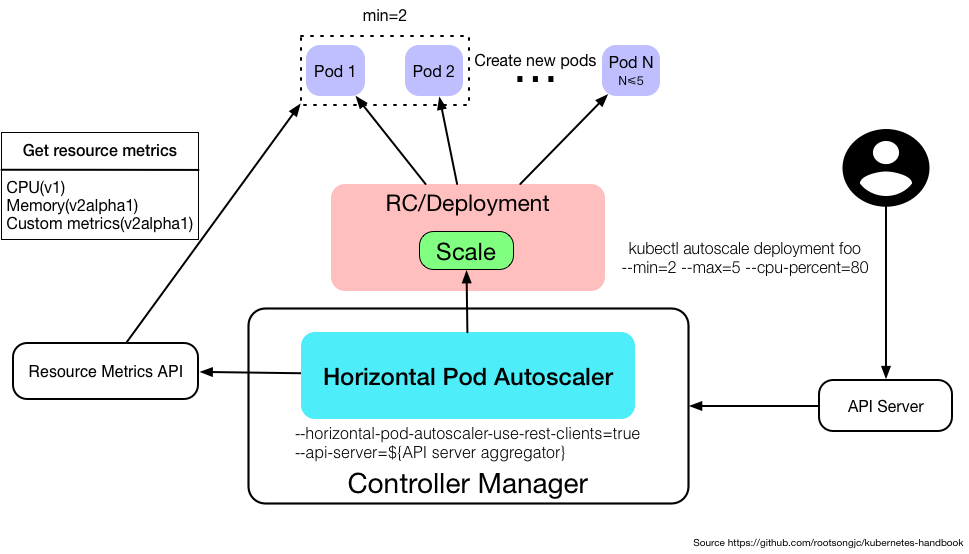

水平自动扩展
Table of Contents
应用的资源使用率通常都有高峰和低谷的时候，如何削峰填谷，提高集群的整体资源利用率，让service中的Pod个数自动调整呢？
这就有赖于 Horizontal Pod Autoscaling 了，顾名思义，使Pod水平自动缩放
这个Object（跟Pod、Deployment一样都是API resource）也是最能体现kubernetes之于传统运维价值的地方，不再需要手动扩容了 终于实现自动化了，还可以自定义指标，没准未来还可以通过人工智能自动进化呢！
HPA属于Kubernetes中的 autoscaling SIG （Special Interest Group），其下有两个feature：
- Arbitrary/Custom Metrics in the Horizontal Pod Autoscaler#117
- Monitoring Pipeline Metrics HPA API #118
Kubernetes自1.2版本引入HPA机制，到1.6版本之前一直是通过kubelet来获取监控指标来判断是否需要扩缩容 1.6版本之后必须通过API server、Heapseter或者kube-aggregator来获取监控指标
解析
Horizontal Pod Autoscaling仅适用于 Deployment 和 ReplicaSet ，在v1版本中仅支持根据 Pod的CPU利用率 扩缩容，在v1alpha版本中，支持根据 内存 和 用户自定义的metric 扩缩容

Horizontal Pod Autoscaling由API server和controller共同实现
Metrics
在不同版本的API中，HPA autoscale时可以根据以下指标来判断：
- autoscaling/v1
- CPU
- autoscaling/v1alpha1
- 内存
- 自定义metrics
- kubernetes1.6起支持自定义metrics，但是必须在 kube-controller-manager 中配置如下两项：
- –horizontal-pod-autoscaler-use-rest-clients =true
–api-server 指向kube-aggregator
也可以使用heapster来实现，通过在启动heapster的时候指定--api-server=true
- kubernetes1.6起支持自定义metrics，但是必须在 kube-controller-manager 中配置如下两项：
- 多种metrics组合：HPA会根据每个metric的值计算出scale的值，并将最大的那个值作为扩容的最终结果
管理
在不同版本的API中，HPA autoscale时可以根据以下指标来判断：
- autoscaling/v1
- CPU
- autoscaling/v1alpha1
- 内存
- 自定义metrics
- kubernetes1.6起支持自定义metrics，但是必须在 kube-controller-manager 中配置如下两项：
- –horizontal-pod-autoscaler-use-rest-clients =true
–api-server 指向kube-aggregator
也可以使用heapster来实现，通过在启动heapster的时候指定--api-server=true
- kubernetes1.6起支持自定义metrics，但是必须在 kube-controller-manager 中配置如下两项：
- 多种metrics组合：HPA会根据每个metric的值计算出scale的值，并将最大的那个值作为扩容的最终结果
管理
Horizontal Pod Autoscaling作为API resource也可以像Pod、Deployment一样使用kubeclt命令管理，使用方法跟它们一样，资源名称为 hpa
$ kubectl create hpa $ kubectl get hpa $ kubectl describe hpa $ kubectl delete hpa
有一点不同的是，可以直接使用 kubectl autoscale 通过命令行的方式创建Horizontal Pod Autoscaler：
kubectl autoscale (-f FILENAME | TYPE NAME | TYPE/NAME) [--min=MINPODS] --max=MAXPODS [--cpu-percent=CPU] [flags] [options]
例如：
kubectl autoscale deployment foo --min=2 --max=5 --cpu-percent=80
为Deployment foo创建 一个autoscaler，当Pod的CPU利用率达到80%的时候，RC的replica数在2到5之间
- 如果为ReplicaSet创建HPA的话，无法使用rolling update
- 对于Deployment来说是可以的，因为Deployment在执行rolling update的时候会自动创建新的ReplicationController
定义
利用 Horizontal Pod Autoscaling，kubernetes 能够根据 监测到 的 CPU 利用率 （或者在 alpha 版本中支持的应用提供的 metric） 自动的扩容 replication controller ， deployment 和 replica set 。Horizontal Pod Autoscaler 作为 kubernetes API resource 和 controller 的实现：
- Resource: 确定 controller 的行为
- Controller: 会根据监测到用户指定的目标的 CPU 利用率周期性得调整 replication controller 或 deployment 的 replica 数量
原理
- Horizontal Pod Autoscaler 由一个 控制循环 实现，循环周期由 controller manager 中的 –horizontal-pod-autoscaler-sync-period 标志指定（默认是 30 秒）
- 在每个周期内， controller manager 会 查询 HorizontalPodAutoscaler 中定义的 metric 的资源利用率。Controller manager从下面获取 metric :
- 从 resource metric API（每个 pod 的 resource metric）
- 或者自定义 metric API（所有的metric）中
如果 设置 了 目标利用率 ，controller 计算利用的值与每个 Pod 的容器里的 resource request 值的百分比。如果 设置 了 目标原始值 ，将直接使用该原始 metric 值
请注意，如果某些 Pod 的容器没有设置相关的 resource request ，则不会定义 Pod 的 CPU 利用率，并且 Aucoscaler 也不会对该 metric 采取任何操作 对于每个 Pod 自定义的 metric，controller 功能类似于每个 Pod 的 resource metric，只是它使用原始值而不是利用率值 对于 object metric，获取单个度量（描述有问题的对象），并与目标值进行比较，以产生如上所述的比率
- controller 计算所有目标 Pod 的利用率或原始值（取决于所指定的目标类型）的 平均值 ，产生一个用于缩放所需 replica 数量的比率
- HorizontalPodAutoscaler 控制器可以以两种不同的方式获取 metric ：直接的 Heapster 访问和 REST 客户端 访问
当使用直接的 Heapster 访问时，HorizontalPodAutoscaler 直接通过 API 服务器的服务代理子资源查询 Heapster
需要在集群上部署 Heapster 并在 kube-system namespace 中运行
- Autoscaler 访问相应的 replication controller，deployment 或 replica set 来缩放子资源
- Scale 是一个允许动态设置副本数并检查其当前状态的接口
API
Horizontal Pod Autoscaler 是 kubernetes 的 autoscaling API 组中的 API 资源
使用
Horizontal Pod Autoscaler 和其他的所有 API 资源一样，通过 kubectl 以标准的方式支持。
- 使用kubectl create命令创建一个新的 autoscaler
- 使用kubectl get hpa列出所有的 autoscaler
- 使用kubectl describe hpa获取其详细信息
- 使用kubectl delete hpa删除 autoscaler。
另外，可以使用kubectl autoscale命令，很轻易的就可以创建一个 Horizontal Pod Autoscaler
滚动更新期间的自动扩缩容
目前在Kubernetes中，可以通过直接管理 replication controller 或使用 deployment 对象来执行 滚动更新 deployment 对象会自动管理基础 replication controller
Horizontal Pod Autoscaler 仅支持后一种方法：Horizontal Pod Autoscaler 被绑定到 deployment 对象，它设置 deployment 对象的大小，deployment 负责设置底层 replication controller 的大小
Horizontal Pod Autoscaler 不能使用直接操作 replication controller 进行滚动更新，即不能将 Horizontal Pod Autoscaler 绑定到 replication controller，并进行滚动更新（例如使用kubectl rolling-update） 这不行的原因是，当滚动更新创建一个新的 replication controller 时，Horizontal Pod Autoscaler 将不会绑定到新的 replication controller 上
多个 metric
Kubernetes 1.6 中增加了支持基于多个 metric 的扩缩容
可以使用autoscaling/v2alpha1 API 版本来为 Horizontal Pod Autoscaler 指定多个 metric 然后 Horizontal Pod Autoscaler controller 将权衡每一个 metric，并根据该 metric 提议一个新的 scale，在所有提议里最大的那个 scale 将作为最终的 scale
自定义 metric
kubernetes1.8版本以后的kubernetes中，使用 聚合的API server 来实现自定义指标的HPA
配置
将 kube-controller-manager 的启动参数中 –horizontal-pod-autoscaler-use-rest-clients 设置为 true ，并指定 –master 为 API server地址
如--master=http://172.20.0.113:8080
修改 kube-apiserver 的配置文件 apiserver ，增加一条配置用来配置aggregator的CA证书
--requestheader-client-ca-file=/etc/kubernetes/ssl/ca.pem --requestheader-allowed-names=aggregator --requestheader-extra-headers-prefix=X-Remote-Extra- --requestheader-group-headers=X-Remote-Group --requestheader-username-headers=X-Remote-User --proxy-client-cert-file=/etc/kubernetes/ssl/kubernetes.pem --proxy-client-key-file=/etc/kubernetes/ssl/kubernetes-key.pem
定义APIService
已经内置了apiregistration.k8s.io/v1beta1 API，可以直接定义APIService，如：
apiVersion: apiregistration.k8s.io/v1
kind: APIService
metadata:
name: v1.custom-metrics.metrics.k8s.io
spec:
insecureSkipTLSVerify: true
group: custom-metrics.metrics.k8s.io
groupPriorityMinimum: 1000
versionPriority: 5
service:
name: api
namespace: custom-metrics
version: v1alpha1
部署Prometheus
最后使用prometheus-operator.yaml文件部署Prometheus operator
这会产生一个自定义的API：http://xxx.xxx.xxx.xxx:8080/apis/custom-metrics.metrics.k8s.io/v1alpha1 它可以通过浏览器访问，也可以使用下面的命令可以检查该API：
$ kubectl get --raw=apis/custom-metrics.metrics.k8s.io/v1alpha1
{"kind":"APIResourceList","apiVersion":"v1","groupVersion":"custom-metrics.metrics.k8s.io/v1alpha1","resources":[{"name":"jobs.batch/http_requests","singularName":"","namespaced":true,"kind":"MetricValueList","verbs":["get"]},{"name":"namespaces/http_requests","singularName":"","namespaced":false,"kind":"MetricValueList","verbs":["get"]},{"name":"jobs.batch/up","singularName":"","namespaced":true,"kind":"MetricValueList","verbs":["get"]},{"name":"pods/up","singularName":"","namespaced":true,"kind":"MetricValueList","verbs":["get"]},{"name":"services/scrape_samples_scraped","singularName":"","namespaced":true,"kind":"MetricValueList","verbs":["get"]},{"name":"namespaces/scrape_samples_scraped","singularName":"","namespaced":false,"kind":"MetricValueList","verbs":["get"]},{"name":"pods/scrape_duration_seconds","singularName":"","namespaced":true,"kind":"MetricValueList","verbs":["get"]},{"name":"services/scrape_duration_seconds","singularName":"","namespaced":true,"kind":"MetricValueList","verbs":["get"]},{"name":"pods/http_requests","singularName":"","namespaced":true,"kind":"MetricValueList","verbs":["get"]},{"name":"pods/scrape_samples_post_metric_relabeling","singularName":"","namespaced":true,"kind":"MetricValueList","verbs":["get"]},{"name":"jobs.batch/scrape_samples_scraped","singularName":"","namespaced":true,"kind":"MetricValueList","verbs":["get"]},{"name":"jobs.batch/scrape_duration_seconds","singularName":"","namespaced":true,"kind":"MetricValueList","verbs":["get"]},{"name":"namespaces/scrape_duration_seconds","singularName":"","namespaced":false,"kind":"MetricValueList","verbs":["get"]},{"name":"namespaces/scrape_samples_post_metric_relabeling","singularName":"","namespaced":false,"kind":"MetricValueList","verbs":["get"]},{"name":"services/scrape_samples_post_metric_relabeling","singularName":"","namespaced":true,"kind":"MetricValueList","verbs":["get"]},{"name":"services/up","singularName":"","namespaced":true,"kind":"MetricValueList","verbs":["get"]},{"name":"pods/scrape_samples_scraped","singularName":"","namespaced":true,"kind":"MetricValueList","verbs":["get"]},{"name":"services/http_requests","singularName":"","namespaced":true,"kind":"MetricValueList","verbs":["get"]},{"name":"jobs.batch/scrape_samples_post_metric_relabeling","singularName":"","namespaced":true,"kind":"MetricValueList","verbs":["get"]},{"name":"namespaces/up","singularName":"","namespaced":false,"kind":"MetricValueList","verbs":["get"]}]}